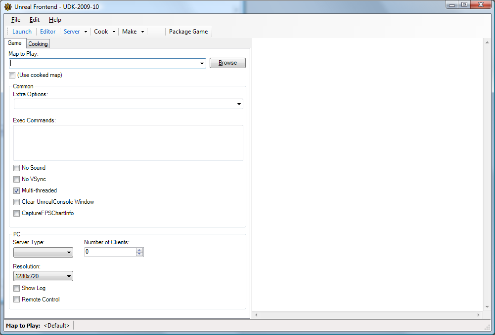
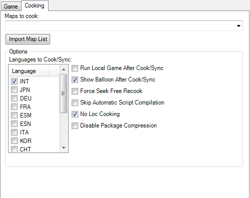

UDN
Search public documentation:
DevelopmentKitUFE
日本語訳
中国翻译
한국어
Interested in the Unreal Engine?
Visit the Unreal Technology site.
Looking for jobs and company info?
Check out the Epic games site.
Questions about support via UDN?
Contact the UDN Staff
中国翻译
한국어
Interested in the Unreal Engine?
Visit the Unreal Technology site.
Looking for jobs and company info?
Check out the Epic games site.
Questions about support via UDN?
Contact the UDN Staff
Unreal Frontend
This document describes an outdated Unreal Frontend. Please see UnrealFrontendOverview

Unreal Frontend (UFE) is a tool that provides a uniform way to perform many common tasks in the Unreal ecosystem. These typically include:- Launching a game
- Starting servers
- Adding clients to a server for local servers
- Running the editor
- Compiling script code
- Cooking data
Menu
File > Exit – Exits UFE. Edit > Copy to Clipboard > Single Player URL – Copies the URL that will be used to launch a single player game on the current platform to the clipboard. Edit > Copy to Clipboard > Multiplayer URL – Copies the URL that will be used to launch a multiplayer game on the current platform to the clipboard. Edit > Copy to Clipboard > Compile Command Line – Copies the URL that will be used to compile scripts for the current configuration to the clipboard. Edit > Copy to Clipboard > Cooking Command Line – Copies the URL that will be used to cook for the current game, platform, and configuration to the clipboard. Edit > Clear Output Window – Clears the output window.Actions Toolbar
 Launch – Launches the current game on the current platform with the current configuration in single player mode.
Editor – Launches the editor for the current game with the current configuration.
Server – Launches a server for the current game on the current platform with the current configuration.
Launch – Launches the current game on the current platform with the current configuration in single player mode.
Editor – Launches the editor for the current game with the current configuration.
Server – Launches a server for the current game on the current platform with the current configuration.
 Server > Add Client – Creates a new instance of the current game on the current platform with the current configuration that will attempt to connect to localhost on PC. This action is not available on console.
Server > Kill All – Terminates all game instances that have been created by the UFE on PC. This action is not available on console.
Cook – Cooks data for the current game on the current platform with the current configuration.
Server > Add Client – Creates a new instance of the current game on the current platform with the current configuration that will attempt to connect to localhost on PC. This action is not available on console.
Server > Kill All – Terminates all game instances that have been created by the UFE on PC. This action is not available on console.
Cook – Cooks data for the current game on the current platform with the current configuration.
 Cook > Global Shaders Only - Only cooks global shaders.
Cook > Full Recook - Forces the cooker to recook all content. This will erase any data cached by a previous cooking operation. (-full)
Cook > Cook .ini/.int's Only - Cook .ini’s and .int’s which can save you time if you’re only changing localization and/or settings. (-inisonly)
Make – Compiles scripts for the currently selected game with the currently selected cooking/compiling configuration.
Package Game - This allows you to name the file and shortcut of your game, then packages Epic's binaries and your cooked content into a standalone installer for distribution.
Cook > Global Shaders Only - Only cooks global shaders.
Cook > Full Recook - Forces the cooker to recook all content. This will erase any data cached by a previous cooking operation. (-full)
Cook > Cook .ini/.int's Only - Cook .ini’s and .int’s which can save you time if you’re only changing localization and/or settings. (-inisonly)
Make – Compiles scripts for the currently selected game with the currently selected cooking/compiling configuration.
Package Game - This allows you to name the file and shortcut of your game, then packages Epic's binaries and your cooked content into a standalone installer for distribution.
Tabs
Most of the UFE functionality is split up across a set of tabs in the left side of the interface. The F1-F2 keys are used to quickly switch between the tabs.Game Tab
 The Game tab contains options that control how the currently selected game is launched by the UFE.
Map to Play – The map that will be loaded when a game is launched via the Launch or Server buttons.
(Use cooked map) – If this checkbox is checked then when a game is launched via the Launch or Server buttons it will use the first map listed in the Maps to Cook text box on the Cooking tab.
Extra Options – A list of extra options to be passed to the game on startup. These are space delimited and must be prefixed with a – for engine options or a ? for game options.
Exec Commands – A list of commands to be executed by the game on startup.
No Sound – Controls whether sound is enabled when you launch a game (-nosound).
No VSync – Controls whether vsync is enabled when you launch a game (-novsync).
Multi-threaded – Controls whether or not a game is launched using multiple threads or a single thread (-onethread).
Clear UnrealConsole Window - Controls whether or not the UnrealConsole window associated with the game being launched will have its output cleared.
CaptureFPSChartInfo – Controls whether or not to capture FPS chart buckets (-CaptureFPSChartInfo or -gCFPSCI).
Number of Clients – This is used by both the PC and consoles when starting a multiplayer game. It specifies the number of clients that will automatically be created to connect to the server. When clicking Server > Add Client this value also specifies the number of extra clients that will be created.
Server Type – Specifies the type of server that will be created when the Server button is clicked:
The Game tab contains options that control how the currently selected game is launched by the UFE.
Map to Play – The map that will be loaded when a game is launched via the Launch or Server buttons.
(Use cooked map) – If this checkbox is checked then when a game is launched via the Launch or Server buttons it will use the first map listed in the Maps to Cook text box on the Cooking tab.
Extra Options – A list of extra options to be passed to the game on startup. These are space delimited and must be prefixed with a – for engine options or a ? for game options.
Exec Commands – A list of commands to be executed by the game on startup.
No Sound – Controls whether sound is enabled when you launch a game (-nosound).
No VSync – Controls whether vsync is enabled when you launch a game (-novsync).
Multi-threaded – Controls whether or not a game is launched using multiple threads or a single thread (-onethread).
Clear UnrealConsole Window - Controls whether or not the UnrealConsole window associated with the game being launched will have its output cleared.
CaptureFPSChartInfo – Controls whether or not to capture FPS chart buckets (-CaptureFPSChartInfo or -gCFPSCI).
Number of Clients – This is used by both the PC and consoles when starting a multiplayer game. It specifies the number of clients that will automatically be created to connect to the server. When clicking Server > Add Client this value also specifies the number of extra clients that will be created.
Server Type – Specifies the type of server that will be created when the Server button is clicked: - Listen – The server is started as a player hosting a match.
- Dedicated – The server is started as a dedicated server that cannot participate in the match.
Cooking Tab

The cooking tab contains options that control how data is cooked. Maps to cook – This text box contains a space delimited list of maps that will be cooked. Import Map List – This button allows you to import a list of maps into the Maps to cook text box. Languages to Cook/Sync – The languages that will be cooked and/or synced. Run Local Game After Cook/Sync – Launches a single player game after cooking/syncing has completed. Show Balloon After Cook/Sync – Controls whether or not a balloon tool tip will inform you of when a commandlet has completed if UFE does not have focus. Force Seek Free Recook – Forces every seek free package to be recooked (-recookseekfree). Skip Automatic Script Compilation – If checked this prevents the cooker from making sure scripts are up to date before it runs. No Loc Cooking – Does not do the extra work required for a multilingual release. Disable package compression – Disables package compression.